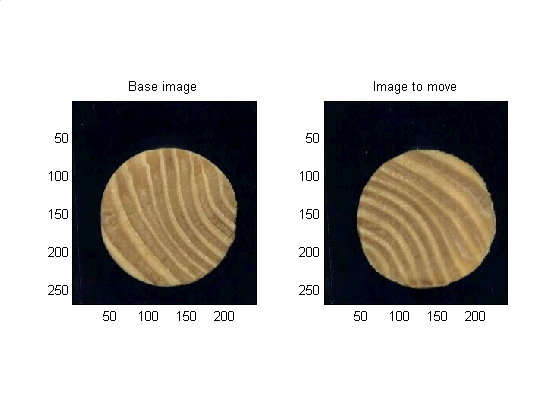
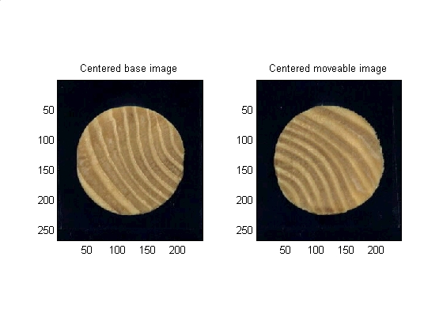
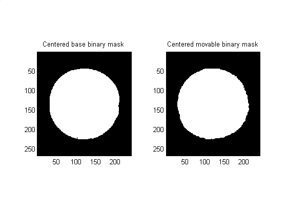
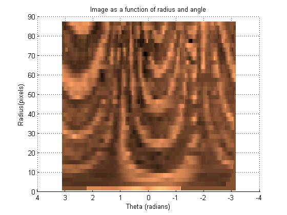
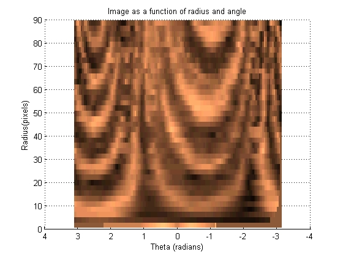
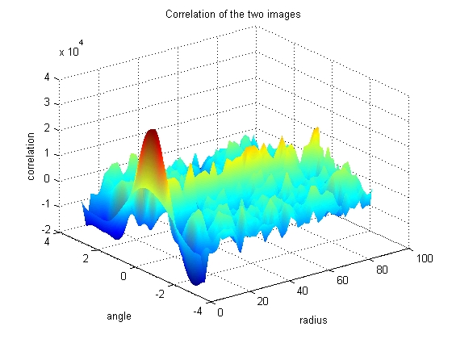
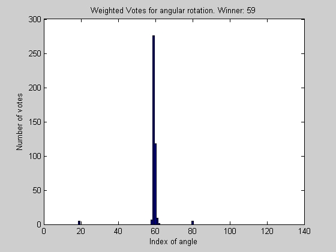
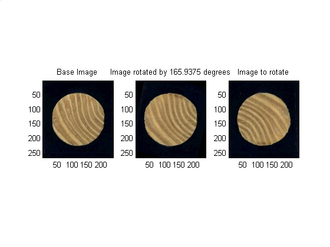

Overview
The demo here in the main.html document can be run directly from the file main.m. In this section the memory is cleared, some parameters are set, and the original images are loaded and displayed.
close all clear clc % Setting up parameters and filenames params.VERBOSE = 1; %Get more plots out (True or False) params.PLANE = 3; %Which plane of the RGB is of interest to us for opperations on a single plane params.BLACK_BACKGROUND = 1; %Images have a black background (True or False) params.map = copper(256); %Set colormap to something that is similar to wood params.number_angular_divisions = 2^7; %Powers of two are faster FFT params.number_radial_divisions = 40; %Arbitrary constant base_filename = 'dowel01.jpg'; %Filename of non-moving image move_filename = 'dowel02.jpg'; %Filename of image that will move to the base image base_image = imread(base_filename); %reads in the image move_image = imread(move_filename); %reads in the image % Data visualization. subplot(1,2,1) subimage(base_image); title('Base image') subplot(1,2,2) subimage(move_image); title('Image to move') set (gcf, 'color', 'w')
Correct the X and Y displacements
The two images are displaced from each other in the X and Y direcions. First the X and Y direction will be corrected by lining up the centroids of the two images.
Method: First mask the image from background then find centroid of the image. Finally center the image based on its centroid.
base_plane_of_interest = base_image(:,:,params.PLANE); %Must use a single layer grayscale for most operations. Blue plane is best %contrast for these images base_bw_plane_of_interest = im2bw(base_plane_of_interest, graythresh(base_plane_of_interest)); %Turn to binary based on threshold gotten from graythresh base_plane_of_interest_segmented = bwmorph(base_bw_plane_of_interest, 'open'); %morphology base_binary_mask = imfill (base_plane_of_interest_segmented, 'holes'); %fill it in % Get some data about the new region base_properties = regionprops(real(base_binary_mask),'all'); base_centroid_row = round(base_properties.Centroid(2)); base_centroid_col = round(base_properties.Centroid(1)); % Place a dot at the centroid, one for each layer base_image(base_centroid_row, base_centroid_col, 1) = 255; base_image(base_centroid_row, base_centroid_col, 2) = 255; base_image(base_centroid_row, base_centroid_col, 3) = 255; % Nice to have image be 0dd number of pixels in each diension base_image = make_odd_by_odd(base_image); base_binary_mask = make_odd_by_odd(base_binary_mask); % Grab the new size [base_num_rows, base_num_cols, base_num_layers] = size(base_image); % Where is the center of the image? base_goal_row = (base_num_rows - 1) / 2 + 1; base_goal_col = (base_num_cols - 1) / 2 + 1; % how much do I need to move to center this? base_delta_rows = base_goal_row - base_centroid_row; base_delta_cols = base_goal_col - base_centroid_col; %shift the images to be centered base_image = circshift(base_image , [base_delta_rows, base_delta_cols]); base_binary_mask = circshift(base_binary_mask, [base_delta_rows, base_delta_cols]); % Same thing for the second image. In production code this would be in % a function, but this script was made for seminar presentation where all % the code should be visible. % Begin repeated code ------------------------------------- move_plane_of_interest = move_image(:,:,params.PLANE); move_bw_plane_of_interest = im2bw(move_plane_of_interest, graythresh(move_plane_of_interest)); move_plane_of_interest_segmented = bwmorph(move_bw_plane_of_interest, 'open'); move_binary_mask = imfill (move_plane_of_interest_segmented, 'holes'); move_properties = regionprops(real(move_binary_mask),'all'); move_centroid_row = round(move_properties.Centroid(2)); move_centroid_col = round(move_properties.Centroid(1)); move_image(move_centroid_row, move_centroid_col, 1) = 255; move_image(move_centroid_row, move_centroid_col, 2) = 255; move_image(move_centroid_row, move_centroid_col, 3) = 255; move_image = make_odd_by_odd(move_image); move_binary_mask = make_odd_by_odd(move_binary_mask); [move_num_rows, move_num_cols, move_num_layers] = size(move_image); move_goal_row = (move_num_rows - 1) / 2 + 1; move_goal_col = (move_num_cols - 1) / 2 + 1; move_delta_rows = move_goal_row - move_centroid_row; move_delta_cols = move_goal_col - move_centroid_col; move_image = circshift(move_image , [move_delta_rows, move_delta_cols]); move_binary_mask = circshift(move_binary_mask, [move_delta_rows, move_delta_cols]); % End of repeated code ------------------------------------- % Data visualization subplot(1,2,1) subimage(base_image); title('Centered base image') subplot(1,2,2) subimage(move_image); title('Centered moveable image') set (gcf, 'color', 'w')
% Data visualization subplot(1,2,1) subimage(base_binary_mask); title('Centered base binary mask') subplot(1,2,2) subimage(move_binary_mask); title('Centered movable binary mask') set (gcf, 'color', 'w')
Convert the data from X-Y coordinates to Theta-Radius coordinates
This section transforms the image such that each set of pixels that radiate out at a given angle from the centroid become a vertical line in a new image. These images can then be 'slid' left and right across each other to find the highest correlation between the images.
[base_radii, base_theta, base_intensity] = image2angularintesity(base_binary_mask, rgb2gray(base_image), params); set (gcf, 'color', 'w')
[move_radii, move_theta, move_intensity] = image2angularintesity(move_binary_mask, rgb2gray(move_image), params); set (gcf, 'color', 'w')
Find the angular displacement by using frequency domain mathematics
The Fast Fourier Tranform has some nice properties that allow the angle of highest correlation be found quickly and cleanly. The three dimensional plot of correlation as a function of angle and radius can be used to figure out which angular shift yields the highest correlation between the two images.
Looking at the graph, it can be seen that most of the radius have reached a consenus as to which angular shift should be used, however some of the angles of smaller radius tend to disagree. Because the smaller radii have less pixels, their votes are less informed, so must be given less weight in the final decision as to the proper angular shift.
BI = fft(base_intensity); %Base Intensity FFT MI = fft(move_intensity); %Move Intensity FFT CI = conj(BI) .* (MI); %Correlation Intensity FFT ci = real(ifft(CI)); %Correlation out of FFT space nci = ci; %normalized correlation being built nci = nci - repmat(mean(nci), size(nci,1), 1); % normalized correlation removes the mean value
h = surf(move_radii(:,2:end), move_theta(:,2:end), nci(:,2:end)); set (h, 'linestyle', 'none') title('Correlation of the two images') xlabel('radius') ylabel('angle') zlabel('correlation') colormap(jet) shading interp set (gcf, 'color', 'w')
Find the peak correlation
[value_of_correlation, indice_of_peak_correlation_at_given_radius] = max(ci);
% Do voting to find out how much to shift by
index_of_peak_correlation = best_correlation_index(indice_of_peak_correlation_at_given_radius, params);Correct the theta displacement
The angle decided upon in the previous section is now used as the input argument to an IMROTATE command which will rotate the image as needed.
% mathmatical housekeeping degrees_per_step = 360 / params.number_angular_divisions; angle_to_shift = index_of_peak_correlation * degrees_per_step; % Finally rotate the images (mask and the image itself) rotated_image = imrotate(move_image , angle_to_shift,'bicubic','crop'); rotated_binary_mask = imrotate(move_binary_mask, angle_to_shift,'bicubic','crop'); % Data visualization subplot(1,3,1) subimage(base_image) title('Base Image') subplot(1,3,2) subimage(rotated_image) title(['Image rotated by ' num2str(angle_to_shift) ' degrees']) subplot(1,3,3) subimage(move_image) title('Image to rotate') set (gcf, 'color', 'w')
Doug Hull <hull@mathworks.com> 5/20/2002 Copyright 1984-2001 The MathWorks, Inc. This function is not supported by The MathWorks, Inc. It is provided 'as is' without any guarantee of accuracy or functionality.